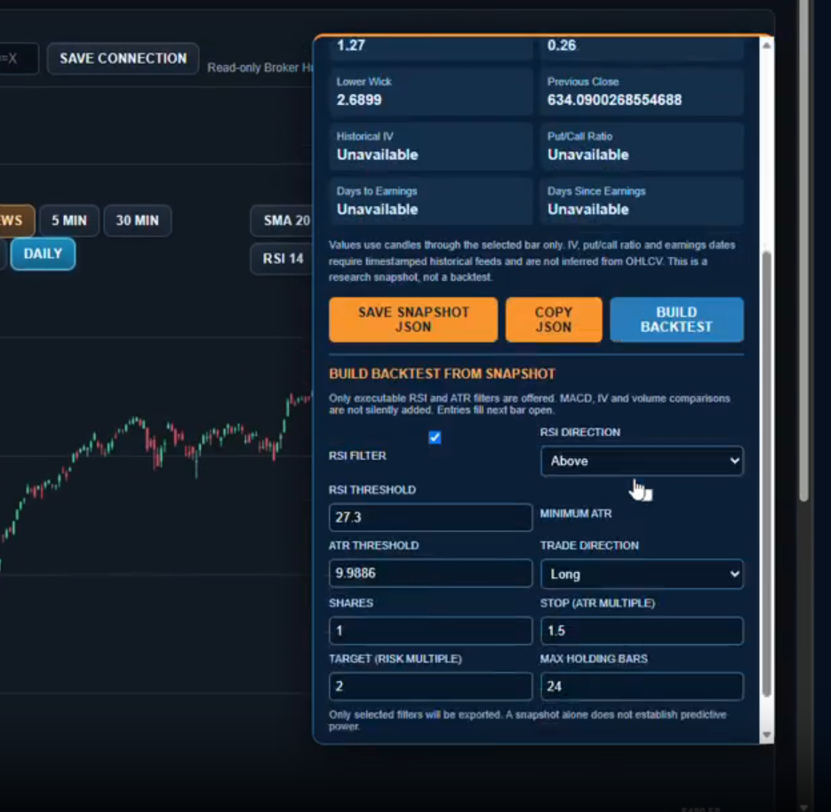

Advanced Chart Lab
PRODUCT INFORMATION · SEE CHECKOUT FOR RELEASE AVAILABILITY
Overview & features
03 · LIVE CHART TRADING & TECHNICAL ANALYSIS
Advanced Chart
LIVE BROKER DATA · CLICK-TO-TRADE · PRIVATE WORKSPACE
LIVE CLICK TRADING Directly from your chart ---> Broker
Plan LONG and SHORT trades directly on live broker-connected charts, with visual entry, target and protective stop levels.
- Click-to-trade with L/S plans and bracket orders
- Adjust protective stops directly on the chart after entry
- Live broker-connected pricing and private drawings
- Professional indicators, Fibonacci and pattern tools
Free Beta includes core tools; Premium adds edition-dependent capabilities. Broker subscriptions may be required for live data.
VIEW SLIDESHOWS ↗PRODUCT PAGE ↗
Click screenshot to view full size ↗
EXPLORE MORE CHART FEATURES · CLICK TO ENLARGE
Fibonacci toolsPattern drawingsIndicatorsMulti-indicator viewLive Trade ChartPattern DetectionChart Snapshot
Videos & screenshots
Advanced Chart Lab screenshot

Advanced Chart Lab
Chart Snapshot
Pattern Detection
Chart Lab Features
Download & checkout
Product selection, purchase, licensing and downloads remain in the existing checkout page.
Go to checkout →← All software